本书作者：测试开发刚哥，文章版权归个人所有，未经授权请勿转载。
JMeter逻辑控制器可以对元件的执行逻辑进行控制，就像编程一样，实现业务需求。
JMeter包括了以下逻辑控制器：
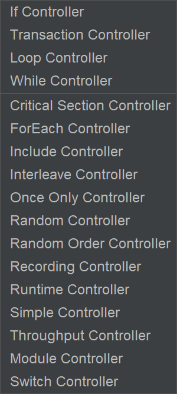
一共17种。除了仅一次控制器外，其他控制器下可以嵌套别的种类的逻辑控制器。
If Controller
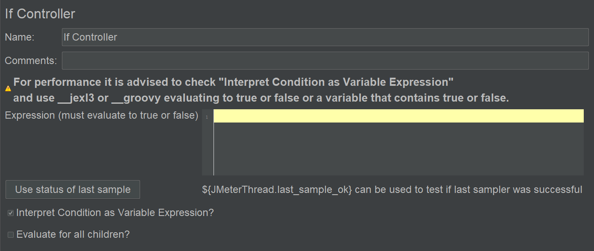
控制此节点下的元件是否运行。
Expression：可以使用变量表达式或JavaScript。
勾选Interpret Condition as Variable Expression表示使用变量表达式，建议勾选上。
Use status of last Sample表示判断上个取样器是否成功，点击后会把${JMeterThread.last_sample_ok}添加到Expression输入框中：
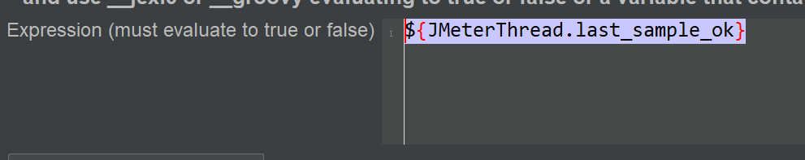
Evaluate for all children：判断条件是否针对所有的子节点，默认不勾选，只在If Controller入口处判断一次，否则每次节点都会进行判断。
Transaction Controller
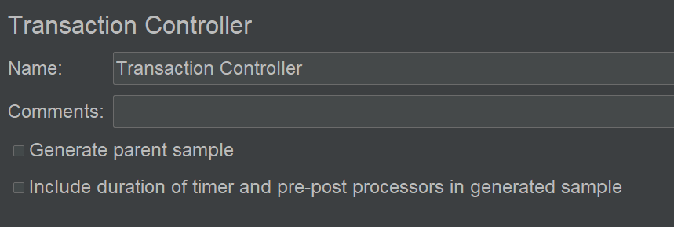
事务控制器能够帮我们把一堆请求归到一个大的事务中去，在报告分析时更方便。
Generate parent sample：是否生成父取样结果，勾选后有两个效果，一是Aggregate Report会看到Transaction Controller字样，它把节点下的取样器的运行结果（如消耗时间）累加在一起（注意事务控制器下如果有多个取样器，全部取样器都运行成功，整个事务控制器才算成功），比如：
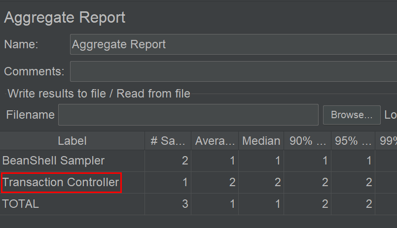
二是View Return Tree中会看到多一个结果，比如：
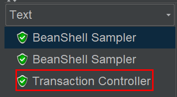
Include duration of timer and pre-post processors in generated sample：包括定时器和前置-后置处理器的耗时，建议不用勾选，不然会影响统计结果。
Loop Controller
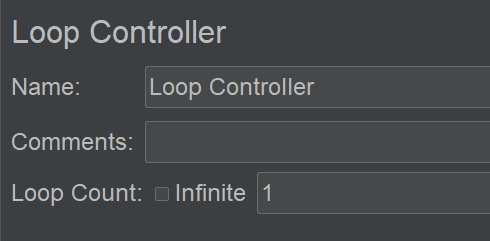
跟线程组的Loop设置一样。最终执行次数 = 线程组执行次数 x 循环控制器执行次数，比如线程组设置3次，循环控制器设置6次，那么控制器下面的元件会执行18次。
While Controller
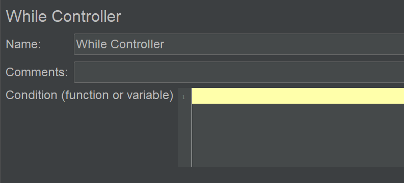
其子节点下的元件将一直运行直到While条件为false。
Condition：接受变量表达式与变量，比如${inputVar}<10，当inputVar=7时，它的子节点将一直运行下去。
另外提供以下三个常量：
- Blank：当循环中有取样器失败后停止。
- LAST：当循环前有取样器失败则不进入循环。
- Otherwise：当判断条件为false时停止循环。
Critical Section Controller
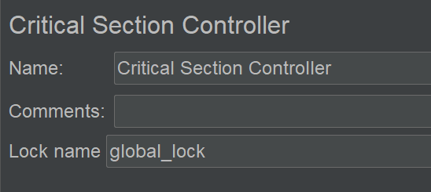
加锁让多线程顺序执行。
比如，不加锁，3个线程是并行执行的。：
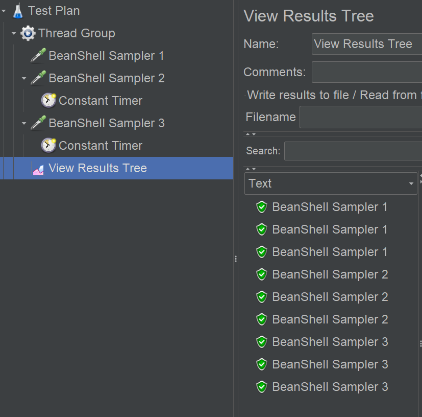
加锁以后，变成顺序执行了：
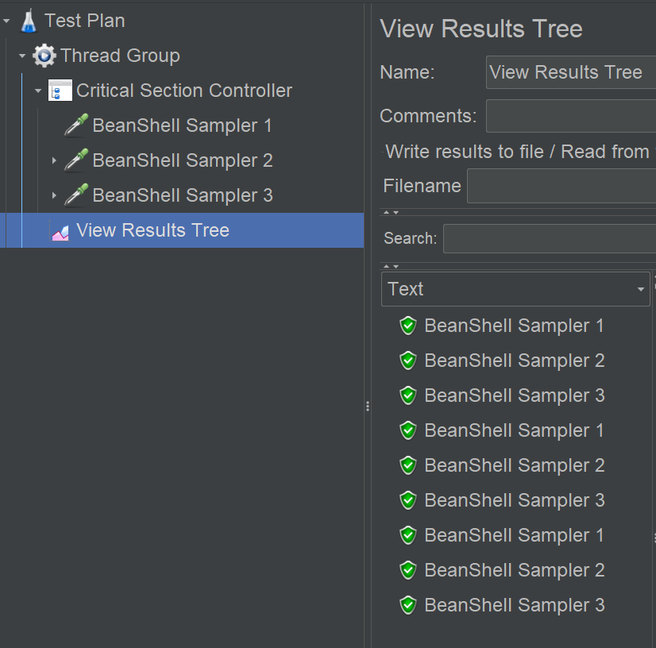
ForEach Controller
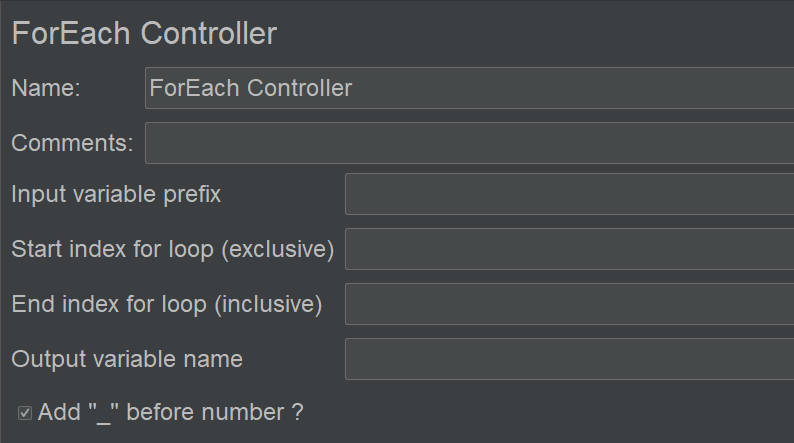
Input variable prefix：输入变量前缀。可以是用户自定义变量里面的多个变量如id_1, id_2, id_3（这里就填写id）：
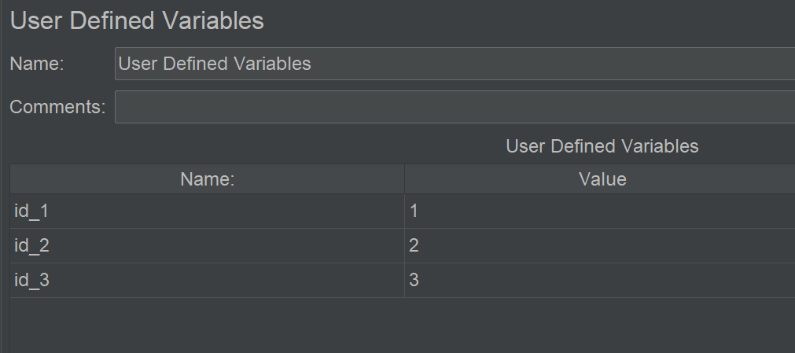
也可以是正则表达式提取器匹配到的多个值（这里就填写varName）：
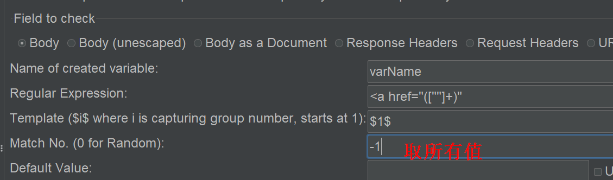
Start index for loop (exclusive)：循环变量下标起点（不包括自己）。
End index for loop (inclusive)：循环变量下标终点（包括自己）。
Output variable name：输出变量名，比如returnVar，通过${returnVar}引用。
Add "_" before number：变量前缀后是否加“_”作为分隔符。
示例：
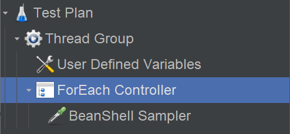
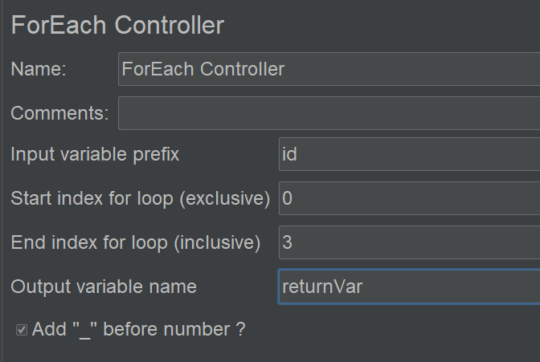
Include Controller
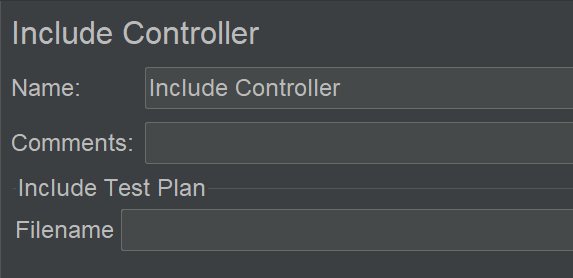
类似于程序中的函数，可以把其他.jmx文件包含进来。
被导入的测试计划有特殊要求：不能有线程组，只能包含简单控制器及控制器下的元件。
比如一个查询订单的业务操作用Sampler来模拟，然后放到简单控制器中作为一个执行单元，别的地方也要用到时，就可以不重写直接引用过来。
Interleave Controller
其节点下的取样器会交替执行。
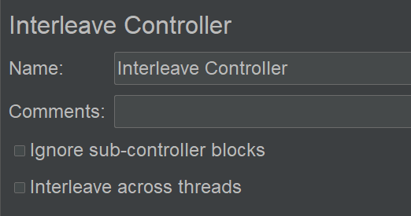
比如：
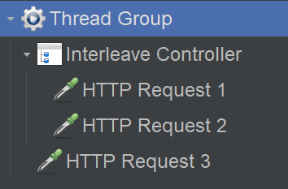
1个线程迭代3次，执行顺序是1 3, 2 3, 1 3。
Ignore sub-controller blocks：不执行子控制器，只执行当前这个交替控制器。比如：
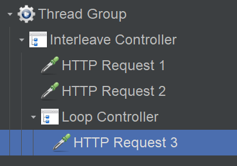
1个线程迭代4次，执行顺序是1, 2, 3, 1，Loop Controller失效。注意，1 2 3是交替执行的，每次迭代只执行其中一个。（如果不勾选，Loop设置为2，那么执行顺序是：1, 2, 3 3, 1）
嵌套的例子：
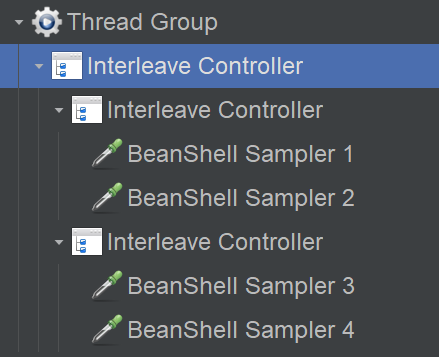
1个线程迭代5次，执行顺序是：1, 3, 2, 4, 1。
Interleave across threads：跨线程交替运行。比如：
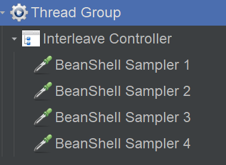
3个线程2次迭代，不勾选的执行顺序：1 2, 1 2, 1 2；勾选的执行顺序：1 2, 2 3, 3 4。
Once Only Controller
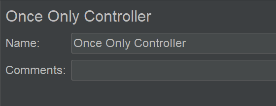
其子元件只运行一次。比如只登录一次，只读取一次CSV，只连一次数据库。
注意，子节点放个CSV Data Set Config，可以让每个线程只读一次，然后使用同一条数据进行反复请求。
多个线程是一行一行取值的，不会重复。
比如：
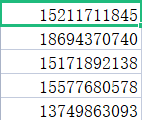
2个线程3次迭代，那么：
- 线程a只读一次，取到尾号1845这条数据，然后用这条数据迭代请求3次。
- 线程b只读一次，取到尾号0740这条数据，然后用这条数据迭代请求3次。
Random Controller
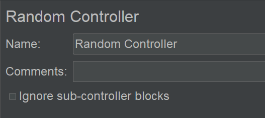
节点下的元件随机运行，运行顺序不定。
Ignore sub-controller blocks：不执行子控制器，只执行当前这个交替控制器。
Random Order Controller
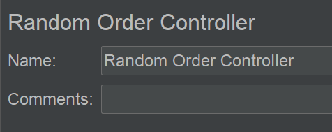
节点下的元件随机执行，且每个元件只执行一次。
Recording Controller
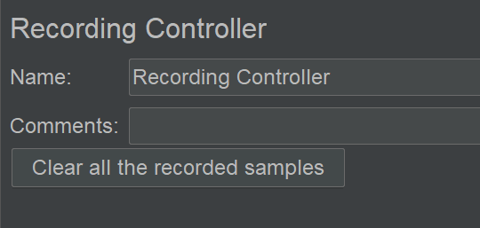
没用。
Runtime Controller
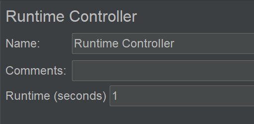
用来控制其子元件的执行时长。
Runtime单位为秒，默认为1，去掉1或者设置为0，它的子元件不执行。
Simple Controller
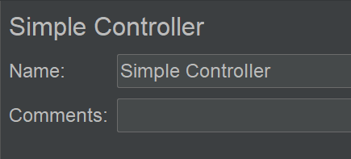
简单控制器很简单，就是用来给Sampler分组的。它指定了一个执行单元，不会改变元件的执行顺序。
示例：
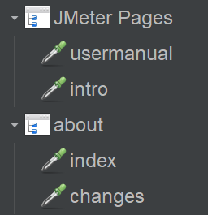
Throughput Controller
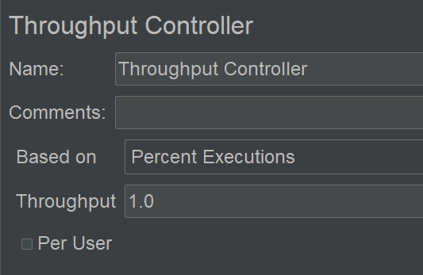
控制子元件的执行次数（不能控制吞吐量，想控制吞吐量可以使用Constant Throughput Timer）。
Percent Executions：按执行次数的百分比来计算控制的执行次数，此时Throughput取值是0~100。
Total Executions：按Throughput的值来指定执行次数。
Per User：只对Total Executions生效，勾选后每个线程单独计算，不勾选则所有线程加起来计算。比如2个线程，每个线程迭代10次，Throughput值为6,，勾选Per User则分别计算分别执行6次共12次；不勾选Per User则加起来计算，共执行6次。
Module Controller
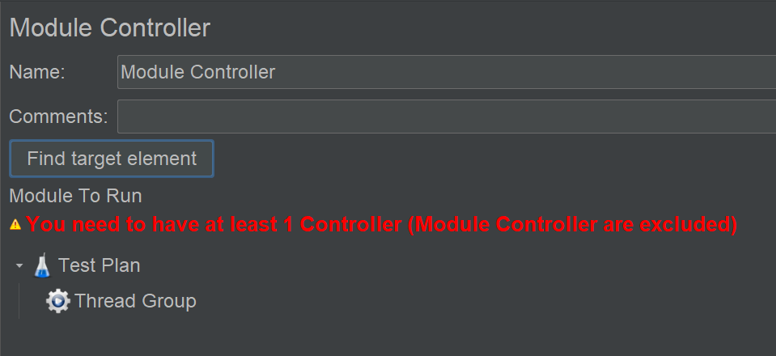
在当前测试计划中引入新的测试片段，测试片段由控制器、取样器及辅助元件构成，能够完成负载的模拟。
示例：
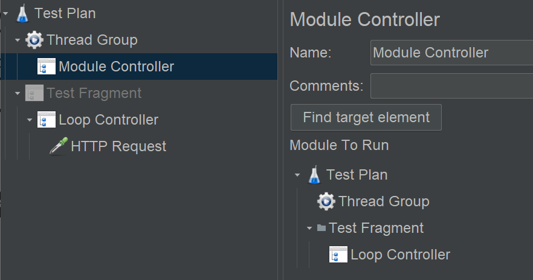
把测试片段里面的Loop Controller引了进来。
Module To Run：下拉列表，选择引入哪一个脚本片段（既包括测试片段也包括当前测试计划的控制器）。
Switch Controller
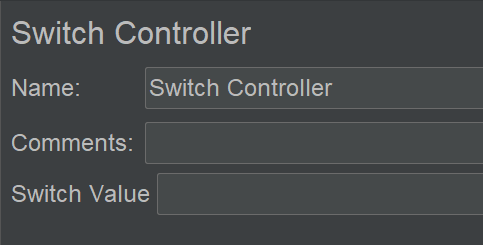
类似于高级语言中的Switch逻辑控制语句。
Switch Value：可以为数字，匹配取样器编号（子节点中取样器编号从0开始），不指定或指定编号超出了子节点数，则运行第0个取样器；也可以为字符，匹配取样器名称，匹配不上就会默认查找名称为default的取样器，如果没有则不运行。
小结
本文对JMeter所有控制器进行了介绍，从这些控制器能感受到JMeter之所以这么流行，是因为它实在太成熟了，这里面的技术需要多少沉淀才能做得出来呀。有时间一定得看看JMeter的源码深度学习下。
参考资料：
《全栈性能测试修炼宝典JMeter实战》